Практичні курси · журнал «ДентАрт» 2014 №4 (77)
Тимчасова ретракція ясен при виконанні непрямих реставрацій
TEMPORARY GUM TROUGHING IN INDIRECT RESTORATIONS
Методика ретракції ясен була вперше описана в середині ХХ століття. Пропонувалося використовувати спеціальний корд. Сьогодні у повсякденній практиці для ретракції ясен використовують хімічну, механічну, електрохімічну методики ретракції. Ці методи включають використання ретракційних ниток з просоченням епінефрином, алюмінію сульфатом або без просочення. Для хімічної ретракції використовують різні гемостатики і ретракційні пасти. Електрохімічна методика передбачає використання лазера, коагулятора, а також перерахованих вище препаратів.
Ретракція ясен — досить поширена процедура у повсякденній стоматологічній практиці, у неї такі цілі:
- захист крайових ясен від механічної травми;
- зупинка кровотечі;
- захист робочого поля від ясенної рідини;
- зменшення обсягу крайових ясен, створення доступу до під’ясенної частини зуба.
Вплив незнімних зубних протезів на тканини протезного ложа, зокрема в ділянці маргінального пародонту, важливо враховувати у зв'язку зі значною частотою і тяжкістю ускладнень, що розвиваються після лікарських втручань.13,14,19,21,25 Розвиток запального процесу пояснюється не лише травматичним ушкодженням епітелію в процесі препарування зуба, акумуляцією зубної бляшки, а й неправильними контурами і положенням краю штучної коронки.13,30,32,36 Тому триває дискусія про тактику препарування у приясенній частині зуба, яке в більшості випадків провадиться зі створенням уступу.35 Уступ як утворення за функцією і формою повинен забезпечити плавний перехід реставрації до кореня зуба та запобігти травмуванню маргінального пародонту.13,17,15,24 Механічний вплив на ясна сприяє розвитку хронічного запалення,13,25,32,33,36 що призводить до незворотних морфологічних змін комплексу тканин пародонту.21-23,27,29
Таким чином, вирішення питань профілактики захворювань пародонту внаслідок механічної і термічної травм у процесі протезування, особливо на тлі захворювань пародонту, продовжує залишатися проблематичним.13,20,21,30
Найпоширеніший метод відновлення зруйнованих зубів — виготовлення штучних коронок. При використанні коронок слід брати до уваги як ортопедичні показники, так і стан тканин пародонту. В останнє десятиріччя у спеціальній вітчизняній літературі бракує систематизованої інформації про вплив штучних коронок на тканини пародонту. Їх несприятливий вплив на опорно-утримуючий апарат зуба зумовлений кількома факторами: неправильно змодельованим краєм коронки, неадекватними анатомічними характеристиками коронки (контактний пункт, екватор та ін.); неправильно сформованою оклюзійною поверхнею, захворюваннями пародонту і т.д.
При протезуванні важливо враховувати взаєморозташування краю коронки і краю ясен. Можливі такі варіанти розташування коронок: над’ясенне; приясенне (на рівні краю ясен при препаруванні зуба з уступом); під’ясенне. Оптимальним рішенням є використання над’ясенного (у ділянці бокових зубів) і приясенного способів розташування штучних коронок.
Одним із чинників, що визначають якість протезування, є величина крайового зазору, яка визначається товщиною цементного шару на межі край штучної коронки — тканина зуба. Більшість авторів порівнює результати власних досліджень з максимально припустимою величиною крайового зазору, рівною 39 мкм, яку визначив Дж. Крістенсен/Christensen GJ 1966 р. Крім того, край реставрації має точно відповідати межі препарування.5,12 Крайове прилягання між коронкою і уступом не повинно надмірно перевищувати обсяг, необхідний для цементу. Прийнято вважати, що у пришийковій області ця величина не повинна перевищувати 20-40 мкм.
Причина незадовільних (у пришийковій зоні) металокерамічних коронок може бути зумовлена клінічними (на відбитку не отримано якісного відображення тканин крайового пародонту — апікального краю уступу, ясенної борозни) і лабораторними помилками.1
Для забезпечення довговічності ортопедичної реставрації має значення відновлення зруйнованої кукси зуба в результаті карієсу та його ускладнень.
Доведено, що стійкість до фрактур цільнокерамічних коронок значною мірою залежить від модуля еластичності цементу для фіксації і матеріалу, з якого виготовлено культю.6 Для фіксації та попередньої реставрації, за сучасними даними, доцільно застосовувати текучі композити, бо вони забезпечують міцну адгезію і стійкість до компресійних навантажень. Однак слід зазначити, що надлишкова еластичність і, як наслідок, значна деформація можуть порушувати крайову адаптацію. Нині використання текучого композиту рекомендується у вигляді підкладки під власне основу з того ж наповненого композиту, що і матеріал для реставрації, наприклад, вкладки.6
Результати проведених деякими авторами клінічних, рентгенологічних і особливо цитоензимохімічних досліджень свідчать про те, що при протезуванні металокерамічними і керамічними зубними протезами з фіксацією опорних елементів на рівні ясенного краю у поєднанні із закритим кюретажем пародонтальних кишень патологічні зміни в тканинах, що оточують опорні зуби, мінімальні.13,20,22, 33,35
У 1941 р. Томпсон описав ретракцію ясен за рахунок механічного розширення зубоясенної борозни зволоженою ниткою. Тепер для просочення нитки використовуються кілька хімічних сполук: епінефрин, соляна кислота, галун (подвійний сульфат алюмінію та лужного металу), алюмінію хлорид, цинку хлорид, алюмінію сульфат, дубильна кислота і сульфат заліза, усі вони допомагають ретракції і зупиняють кровотечу ясен.
Здоровий стан пародонту без ознак будь-якої патології та запалення — обов'язкова умова ретракції ясен. Зондування зубоясенної борозни чи пародонтальних кишень — найцінніший діагностичний метод пародонтологічного обстеження, який дозволяє визначити необхідність хірургічного втручання. Протезування можна починати лише після стабілізації стану м'яких тканин та завершення підготовчого етапу лікування.
Перед отриманням відбитка стоматолог повинен визначити біотип ясен для прийняття рішення про можливість і необхідність відведення м'яких тканин.39 Достатнє розширення зубоясенної борозни і зупинка кровотечі — дві найважливіші умови для забезпечення якісного доступу до межі препарування та отримання якісних відбитків. Класичні техніки ретракції ясен із застосуванням лазера або, що зустрічається набагато частіше, обертового інструмента болючі для пацієнта і призводять до травмування м'яких тканин.11
Ряд досліджень на тему механічної поведінки крайового пародонту, результати яких отримані in vivo на людях і in vitro на свинях, демонструють такі результати: сила епітеліального прикріплення становить 1 Н/мм2; дуже незначний тиск в 0,01 Н/мм2 призводить до розширення борозенки, а після його усунення ясна повертаються у вихідне положення практично миттєво; тиск, що дорівнює 0,1 Н/мм2, призводить до розширення борозенки на 1,5 мм, а повернення ясен у початкове положення відбувається в середньому через 2 хв (протягом цього часу зазор складає 0,5 мм).11
Для адекватного препарування зубів, чіткого визначення меж препарування, ретракції ясен ряд авторів пропонує оцінювати зубоясенний комплекс.39
Для цих цілей прийнято термін «біологічна ширина» — визначення параметрів біологічного прикріплення до поверхні зуба. Це важливо у зв'язку з тим, що порушення біологічної ширини у більшості випадків призводить до запалення м'яких тканин на рівні циркулярних волокон, причому іноді навіть осторонь від безпосередньої ділянки ушкодження цього утворення.39
Результати гістологічних досліджень засвідчили, що при ушкодженні біологічної ширини зміни починаються протягом перших семи днів. Саме в ці терміни починається апікальне зміщення епітеліального і сполучнотканинного прикріплення відносно межі препарування. Таким чином, природні механізми, спрямовані на усунення ушкоджень біологічної ширини, призводять до рецесії.
Існує ряд методів для досягнення тимчасової ретракції ясен: застосування ретракційних ниток з просоченням і без нього; електро- і радіохірургічний метод; опосередковане відтискування ясен за допомогою тимчасових коронок.12
Проведення ретракції за допомогою ретракційної нитки
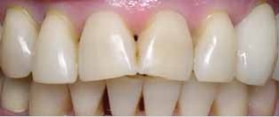
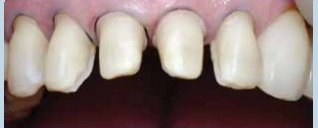
Хімічна ретракція
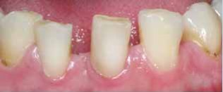
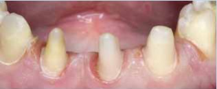
Електрохімічна ретракція
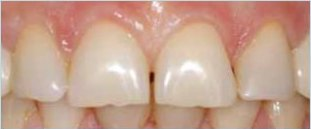
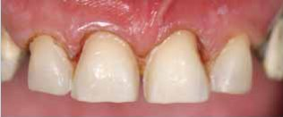
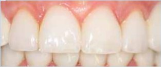
Комбінований метод: ретракція ниткою і електрохімічна ретракція
Приклад 1
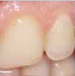
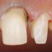
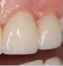
Приклад 2
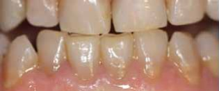
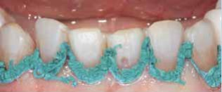
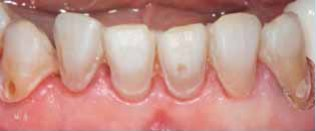

Часто після якісного препарування неможливо отримати добрий відтиск. У гонитві за гарним і негайним результатом знову проводиться анестезія, вводяться ретракційні нитки, зупиняється кровотеча ясен, коагулюються м’які тканини.7 Процес загоєння ушкоджених епітеліальних тканин викликає тривалу ретракцію або рецесію ясен і сприяє оголенню маргінального краю коронок при фіксації протезів.12
Ретракція ясен — це щоденна і поширена процедура у стоматологічній роботі. Вона має забезпечити здоровий, без будь-яких симптомів запального процесу і патологій, стан тканин пародонту. Процедура ретракції має важливі цілі захисту крайових ясен від механічної травми, зупинки кровотечі, захисту робочого поля від ясенної рідини, а також зменшення об’єму крайових ясен, забезпечення доступу до під’ясенної частини зуба.
До недоліків використання ретракційних ниток для ізоляції пришийкових дефектів належать: можлива травматизація зубоясенної борозни при пакуванні нитки; недостатній захист маргінальних ясен під час препарування; можливе включення волокон нитки в реставрацію.
Поява Експасил (П’єр Ролланд)/Expasyl (Pierre Rolland, 1999), препарату для розширення зубоясенної борозни, поклало початок новому витку розвитку в підготовці м’яких тканин для відбитка. Його можна вважати не просто препаратом, а хіміко-механічною технікою розширення зубоясенної борозни у поєднанні із зупинкою кровотечі.11
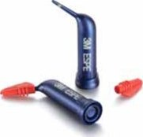
Astringent Retraction Paste від 3М ESPE — рідка ретракційна паста, яка дозволяє значно розширити зубоясенну борозну і зупинити кровотечу. Цей матеріал кардинально змінює погляд стоматологів на підготовку до зняття відбитка. Оптимальне розкриття ясен простим внесенням препарату в зубоясенну борозну не вимагає від лікаря жодних додаткових зусиль. Довгостроковий гемостаз дає можливість отримувати при необхідності відбитки кілька разів, чого не можна зробити при використанні ретракційних ниток. Дотримання простих правил дозволяє досягнути повної зупинки кровотечі у поєднанні з гарною візуалізацією апікального краю зауступного простору.
Методики із застосуванням ретракційної нитки також часто болючі, досить складні і затратні за часом, ушкоджують епітеліальне прикріплення. Подальше періодонтальне лікування на рівні ясенного краю погано прогнозоване і може викликати естетичні проблеми. Зупинка кровотечі, що досягається за допомогою різних продуктів, іноді нестабільна і часто в результаті у борозенці залишається згусток. Усі ці проблеми добре відомі, але раніше з ними доводилося миритися.11
Висновок
Багато класичних способів ретракції викликають у пацієнта болючі відчуття, а також можуть травмувати м’які тканини. Тому дуже важливо підібрати і застосовувати якісну продукцію для цієї процедури. Використання для тимчасової ретракції ясен рідкої ретракційної пасти від фірми 3M Еспе/3M ESPE сприяє значному розширенню зубоясенної борозни. При правильному використанні цього матеріалу повністю зупиняється кровотеча і досягається чудова візуалізація.
Застосування хіміко-механічної техніки ретракції змінить ставлення і погляд стоматологів на процес підготовки до зняття відбитка. Тривалий гемостаз дає можливість отримувати відтиск не раз, якщо це необхідно. Застосування та внесення ретракційної пасти в зубоясенну борозну не змушує лікаря робити додаткові зусилля і забезпечує оптимальне розкриття ясен.
Література
- Сиволол С.И. Некоторые ортопедические конструкции и пародонт /С.И.Сиволол/ Стоматолог. – 2005. –№ 1-2. –С. 52-54.
- Закиров Т.В. К вопросу об этиологии рецессии десны /Т.В.Закиров / Стоматолог. –2005. –№ 10. –С. 46-49.
- Грудянов А.И. Техника проведений операций по устранению рецессий десны /Грудянов А.И., Ерохин А.И., Безрукова И.В.// Пародонтология. –2002. –№1-2. –С. 12-16.
- Рецессия десны. Эпидемиология, факторы риска. Принципы лечения: метод. реком. / [А.М. Хамадеева, В.Д. Архипов, Д.А. Трунин и др.] –Самара, 1999.
- Ряховский А.Н. Система оценки и критерии качества протезирования искусственными коронками /А.Н.Ряховский, М.М. Антоник// Стоматолог. –2005. –№9. –С. 25-29.
- Мангани Франческо. Непрямые эстетические рестврации: композитные инлеи и оверлеи /Франческо Мангани// Стоматолог. –2005. –№12. –С. 29-37.
- Адилханян В.А. Временное протезирование /В.А.Адилханян// Институт стоматологии. –2007. -№3. –С. 70-72.
- Клинические осложнения при протезировании несъемными конструкциями /Трезубов В.Н., Сапронова О.Н., Колесов О.Ю. [и др.] // Институт стоматологии. –2007. –№3. –С. 44-45.
- Aquilini I. Протезирование винирами: услуга «люкс» с видом на большое будущее. Планирование и лабораторный этап. / Aquilini I., Aquilini М., Scauzillo G. // Стоматолог. –2009. –№10. –С. 35-41.
- Ретракция десны // www.trimm.ru
- Атравматичная временная ретракция десны с помощью препарата Expasyl / http:/www.stoma-expo.ru
- Зельман Г. Расширение десневой бороздки перед снятием оттиска. Быстро, надежно и недорого // Стоматолог. –2008. –№3. –С.51-54.
- Брагин Е.А. Тактика зубодесневого сохранения при протезировании несъемными протезами / Е.А.Брагин// Стоматология. – 2003. –Т.82, №4. –С.44-48.
- Абакаров С.И.Влияние ретракции десны на ткани пародонта: дис, канд. мед. наук / С.И. Абакаров. –М., 1984. –169 с.
- Абакаров С.И. Клинико-лабораторные обоснования конструирования и применения металлокерамических протезов: автореф. дис. на соискание науч. степени д-ра мед.наук / С. И. Абакаров –М., 1993. –25 с.
- Абакаров С. И. Получение оттиска для изготовления металлокерамического мостовидного протеза / С.И.Абакаров // Стоматология. – 1990. –С. 59-60.
- Безвестный Е.А. Клинические и технические мероприятия по улучшению прилегания цельнолитых несъемных зубных протезов /Безвестный Е.А., Абдулов И.И., Разов Ю.В.// Стоматология. –1992. –Т.71. –С. 91-93.
Повний список літератури у редакції